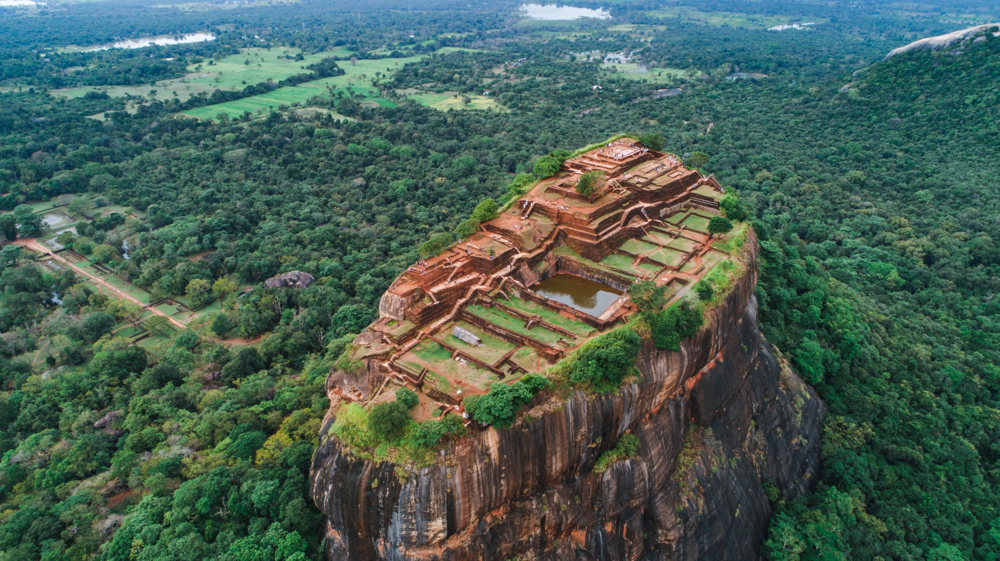
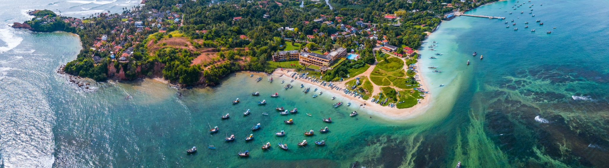

Explore by feeling.
Six inspiring destinations
CULTURAL HERITAGESigiriya Rock Fortress
Climb the 5th-century rock fortress and explore ancient water gardens in Matale District.
Explore experience ↗ 
HILL COUNTRYElla & Nine Arches Bridge
Discover Ella’s lush valleys, Little Adam’s Peak and the iconic Nine Arches Bridge.
Explore experience ↗ 
SOUTH COASTMirissa Beach
Relax along Mirissa’s palm-lined southern coast and explore its seaside viewpoints.
Explore experience ↗ 
WILDLIFE SAFARIYala National Park
Explore protected dry-zone landscapes known for leopards, elephants and birdlife.
Explore experience ↗ RAINFORESTSinharaja Forest Reserve
Explore Sri Lanka’s UNESCO-listed tropical rainforest with a responsible guided walk.
Explore experience ↗ 
TEA COUNTRYNuwara Eliya
Visit cool-climate tea country, scenic viewpoints and the historic town of Nuwara Eliya.
Explore experience ↗ Destination descriptions refer to real Sri Lankan locations. Website photos are illustrative and may not show the exact places named.